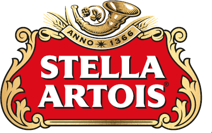

Nuestros Servicios
En Almacén PH ofrecemos todo lo que necesitas para tu estadía en la Isla Martín García.
- Productos de Almacen
- Higiene.
- Frutas y Verduras
- ¡Y la mejor Atencion!
Visitanos y adentrate en el Delta! .
Marcas que nos Acompañan
Encontrá los mejores productos de primera calidad en nuestro almacén:

Encontranos
Estamos ubicados frente al destacamento de Prefectura, en el corazon de la Isla.
Ubicación: Isla Martín García, Buenos Aires, Argentina.
Abrir en Google Maps